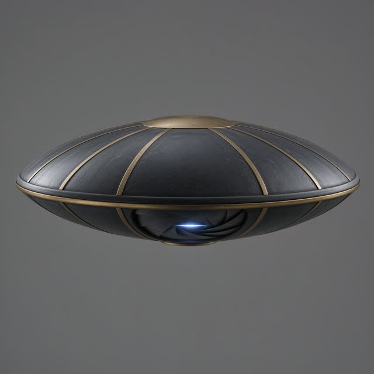
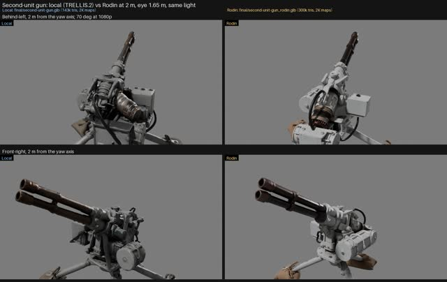
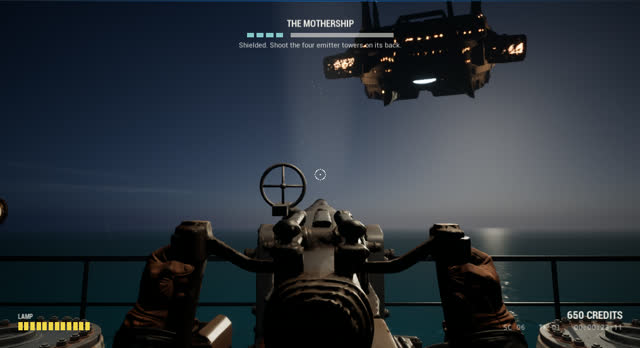
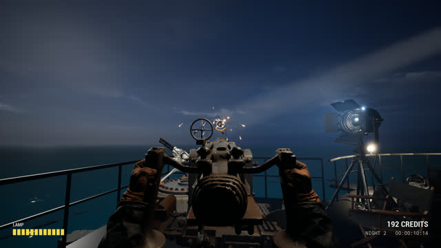

Pictures
Every picture in the log, in the order it was made. Pictures from the running game are screenshots. Pictures from the image model carry the prompt that made them; none of them is in the game as it is. Things that were rebuilt are shown before and after.
Day 1 Thursday 12 November
Day one: a gun on a lighthouse in a storm

The look to aim for. Art direction only: this picture is not in the game, and the game has had to earn every part of it since.
Image model Thu 12 Nov, 15:40
PromptCinematic film still, anamorphic lens, night, violent storm at sea. First-person view from the wet iron gallery of a lighthouse: rain…113 words
Cinematic film still, anamorphic lens, night, violent storm at sea. First-person view from the wet iron gallery of a lighthouse: rain streaking through a huge white lighthouse beam that cuts across the frame, towering black-green waves breaking white on basalt rock below. In the beam, three dark disc-shaped craft with brass ribs and glowing blue-white irises underneath, one of them breaking apart in an orange explosion that lights the low cloud from inside; tracer rounds arc up from the foreground gun. Lightning silhouettes a much larger disc inside the cloud. Wet metal reflections, volumetric light, photoreal, fine film grain. No text, no letters, no numbers, no logos, no brand names, no maker's badges.

The scout, the small saucer, about three metres across. The seed that was chosen; two others put the iris on the side wall, and one grew a spike that read as an antenna.
Image model Thu 12 Nov, 15:40
PromptA small unmanned flying craft about three metres across as a single object: a smooth lens-shaped disc with a hull of dark matte ceramic…150 words
A small unmanned flying craft about three metres across as a single object: a smooth lens-shaped disc with a hull of dark matte ceramic like fired basalt, divided by eight dull brass ribs that run from the rim to a low brass cap on top; on the underside, visible in this view from slightly below, a closed mechanical iris of overlapping dark blades like a camera aperture with a thin line of cold blue-white light at its centre. No windows, no antennas, no legs, no markings. An original design. Centred, the whole object in frame with clear space around it, three-quarter view from slightly below, on a seamless plain mid-grey studio background, soft even studio lighting from all sides, no cast shadow on the background, no other objects, photorealistic product photograph, sharp from front to back. No text, no letters, no numbers, no logos, no brand names, no maker's badges.

06:49, the grey box: a stand-in gun, the lamp's beam, a scout coming apart.
From the running game Thu 12 Nov, 15:40

Four seeds of the player's gun. Seed 5102 became the reference for its Rodin model.
Image model Thu 12 Nov, 15:40
PromptA heavy mid-century naval anti-aircraft autocannon on a pintle mount as a single object: a thick conical steel pedestal bolted to a round…152 words
A heavy mid-century naval anti-aircraft autocannon on a pintle mount as a single object: a thick conical steel pedestal bolted to a round base plate, a U-shaped yoke carrying a single long 40 mm barrel with a flared flash hider and a perforated cooling jacket, twin spade grips with a butterfly trigger at the rear, a ring-and-bead spider sight, an ammunition feed tray on the left and a brass-catching chute on the right. Dark grey naval paint worn to bare steel on the edges, oil stains, light rust in the seams. Centred, the whole object in frame with clear space around it, three-quarter view from slightly above, on a seamless plain mid-grey studio background, soft even studio lighting from all sides, no cast shadow on the background, no other objects, photorealistic product photograph, sharp from front to back. No text, no letters, no numbers, no logos, no brand names, no maker's badges.

The automatic turret at 12:15: the local model on the left, Rodin's on the right, from the same studio picture. Rodin's went into the game.
Model render Thu 12 Nov, 15:40
PromptA small automatic twin-barrel anti-aircraft gun on a low tripod, 1.5 m tall: two long over-and-under barrels, an ammunition drum on each…57 words
A small automatic twin-barrel anti-aircraft gun on a low tripod, 1.5 m tall: two long over-and-under barrels, an ammunition drum on each side, a grey motor box with a braided cable, a turntable ring under the gun, three tubular legs each weighted with a canvas sandbag. Worn grey naval paint, bare steel edges. No markings, no text.

08:22: the first mothership's shield is down, its iris open on the lamp, and rain shows where the beam catches it.
From the running game Thu 12 Nov, 15:40

13:17, the first map: a camera straight above the rock photographs the level, and every mount is a mark and a line in a list. On Friday this becomes the keeper's chart.
From the running game Thu 12 Nov, 15:40

15:00: the new mothership, a fortress 500 metres long, made by Rodin from one of our studio pictures and the text above, over the gallery gun.
From the running game Thu 12 Nov, 15:40
PromptAn enormous alien warship about 500 metres long, a flying fortress built from thick slab-sided armour plates of dark gunmetal with worn,…96 words
An enormous alien warship about 500 metres long, a flying fortress built from thick slab-sided armour plates of dark gunmetal with worn, paler edges, with a tall blade-like keel at the prow, rows of round ports underneath and rows of tiny warm lights along the plate edges. Six box-shaped pods hang from its flanks on short armoured arms; their faces and undersides are open lattice grilles glowing furnace-amber from inside. Four tall, separate, tapering emitter towers with ribbed collars and glowing tips stand at the four corners of its flat back deck. No markings, no text.

The first version as it was copied into the new repository on Friday, photographed by a headless run at 12:46: Night 2 at the gallery gun, a scout bursting over the sights, a turret on the left.
From the running game Thu 12 Nov, 15:40


Day 2 Friday 13 November
Day two: the rebuild, planned around the hut, the walk and three ways to fight

One night in FYR. Diagram drawn for this log from the design; the arrows are the player's own actions.
Drawn by our tools Fri 13 Nov, 13:20

How the rebuild is split. Diagram drawn for this log.
Drawn by our tools Fri 13 Nov, 13:20
No picture of that kind yet.